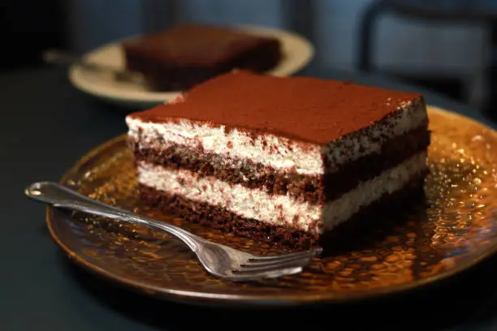

RECETAS DEL TAO
Tiramisú
Ingredientes
Queso mascarpone 500g
4 Yema de huevo
Leche normal 40ml
50g Azúcar
Bizcocho de soletilla
Crema ligera 300g /crema montada en líquido 300ml
Cacao en polvo
Café frío (bebida)
TIEMPO TOTAL --- 8 horas y 30 minutos
ELABORACIÓN ---- 30 minutos
REPOSO --------- 8 horas
Preparación
Preparamos el café y lo dejamos enfriar.
Sacamos el queso mascarpone y dejarlo a temperatura ambiente.
Con la sartén fría echamos: azúcar, yemas de huevo, y leche.
Lo mezclamos y encendemos el fuego a menor potencia, mientras se calienta no tenemos que parar de removerlo hasta que quede pegajoso.
Invertimos la crema en un bol grande, y añadimos el queso mascarpone.
Revolvemos hasta que el color del mascarpone sea amarillento.
Echamos la crema ligera dentro y lo revolvemos.
Sumergimos el bizcocho en el café y lo colocamos en un molde cuadrado.
Ponemos la crema por encima del bizcocho y le añadimos más bizcochos por encima, y así sucesivamente hasta que en la última capa quede sólo crema.
Por último echamos polvo de cacao por encima.
Lo dejamos en la nevera enfriar, al cabo de 8 horas ya se podrá comer tu tiramisú.
